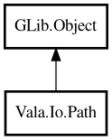

Path
Object Hierarchy:

Description:
public class Path : Object
Path class is a value object that represents a file system path.
Path is immutable: methods that transform the path return a new Path instance rather than modifying the existing one.
Example:
var path = new Path ("/home/user/docs/file.txt");
assert (path.extension () == ".txt");
assert (path.isAbsolute () == true);
assert (path.parent ().toString () == "/home/user/docs");
Content:
Creation methods:
- public Path (string path)
Construct Path object.
Methods:
- public Path abs ()
Returns the absolute path. If the path is already absolute, returns a
normalized version. If relative, prepends the current working directory and normalizes.
- public string basename ()
Extract the base name (file name) from the file path.
- public List<string> components ()
Splits the path into its individual components.
- public string dirname (string path)
Extract the dirname from the file path.
- public bool endsWith (string suffix)
Returns whether this path ends with the given suffix.
- public bool equals (Path other)
Returns whether this path equals another path by comparing their
string representations.
- public string extension ()
Returns the file extension including the leading dot. Returns an empty
string if the file has no extension.
- public bool isAbsolute ()
Returns whether this path is absolute.
- public Path join (string part1, ...)
Joins multiple path components to this path.
- public Path normalize ()
Returns a normalized path by resolving "." and ".." segments.
- public Path parent ()
Returns a new Path representing the parent directory.
- public Path resolve (string other)
Resolves the given path against this path. If other is absolute,
returns a new Path for other. Otherwise, joins this path with other.
- public bool startsWith (string prefix)
Returns whether this path starts with the given prefix.
- public string toString ()
Returns Path as a string.
- public string withoutExtension ()
Returns the path without the file extension.
Inherited Members:
All known members inherited from class GLib.Object
- @get
- @new
- @ref
- @set
- add_toggle_ref
- add_weak_pointer
- bind_property
- connect
- constructed
- disconnect
- dispose
- dup_data
- dup_qdata
- force_floating
- freeze_notify
- get_class
- get_data
- get_property
- get_qdata
- get_type
- getv
- interface_find_property
- interface_install_property
- interface_list_properties
- is_floating
- new_valist
- new_with_properties
- newv
- notify
- notify_property
- ref_count
- ref_sink
- remove_toggle_ref
- remove_weak_pointer
- replace_data
- replace_qdata
- set_data
- set_data_full
- set_property
- set_qdata
- set_qdata_full
- set_valist
- setv
- steal_data
- steal_qdata
- thaw_notify
- unref
- watch_closure
- weak_ref
- weak_unref